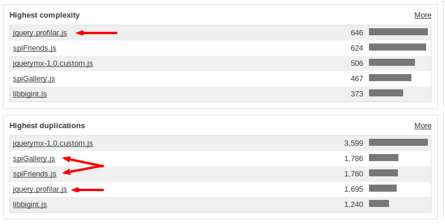
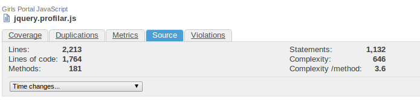
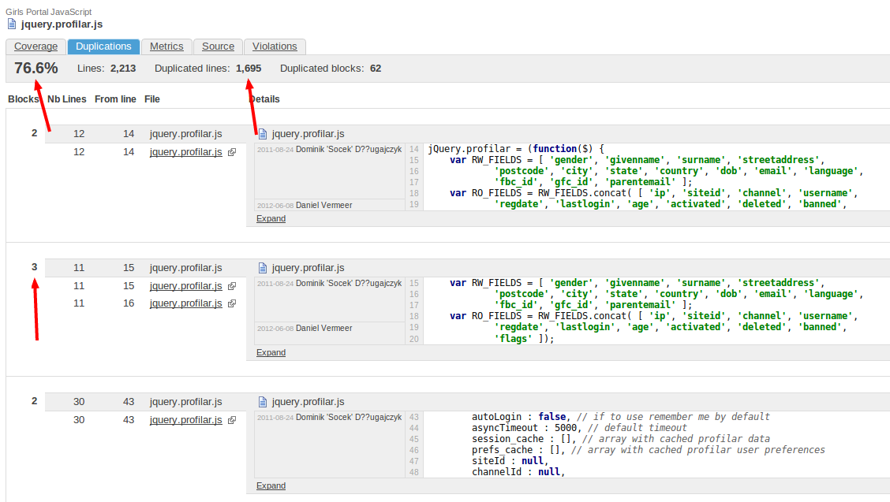

Code Smells
Recognising smelly code
public function getData($page_type, $category_id = null, $subcategory_id = null)
{
if ($page_type != 'all') {
$test_all = $this->getData('all');
if (is_array($test_all)) {
return $test_all;
} else {
if ($page_type != 'all_nogamepage') {
$test_allnogamepage = $this->getData('all_nogamepage');
if (is_array($test_allnogamepage)) {
return $test_allnogamepage;
}
}
}
}
$conditions = array(
'site_id' => $this->_controller->site_id,
'page_type' => $page_type
);
if ($category_id != null && $category_id > 0) {
$conditions['category_id'] = $category_id;
if ($subcategory_id != null && $subcategory_id > 0) {
$conditions['subcategory_id'] = $subcategory_id;
}
}
$takeovers = $this->_controller->Sitetakeover->find(
"first", array(
'conditions' => $conditions,
'limit' => 1
)
);
return $this->prepareFinalArray($takeovers);
}
How
go to da067 and create a new project
How
You can automate the run with Jenkins
Funny things in our codebases

Funny things in our codebases

Funny things in our codebases

What can we do with it
- Track the quality trends of our codebases
- Use in code reviews
- Learn what not to do
- Refactor?
- Use if meaningful
And in the future
Plug our Spil coding standards